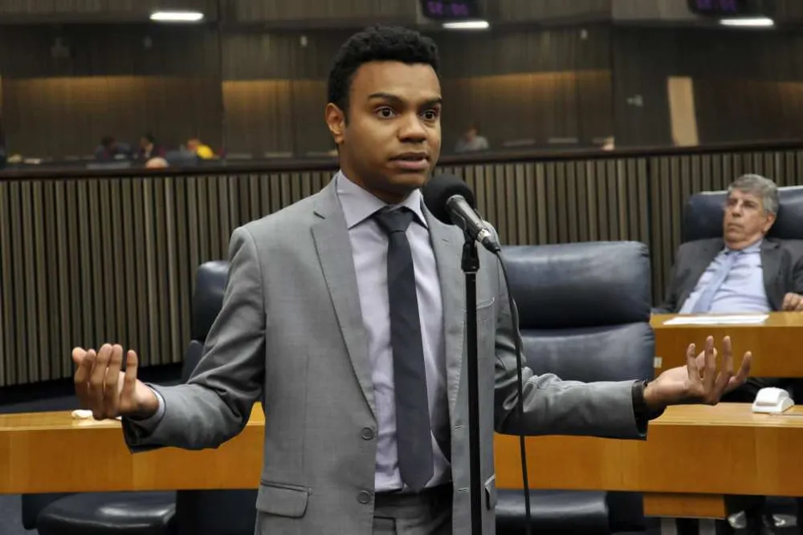

Movimento Brasil Livre
Instituto fundado por ex-integrantes do MBL prepara jovens para embates políticos nas redes
18/11/2026 às 04:56 (horário de Brasília)

O Instituto União Conservadora, fundado por ex-membros do Movimento Brasil Livre (MBL), vem recrutando e oferecendo treinamento gratuito para jovens e adolescentes a fim de torná-los influenciadores e lideranças políticas de direita. A instituição tem como presidente de honra o ex-vereador paulistano Fernando Holiday e oferece mentoria focada em retórica, oratória, economia, história e técnicas de captação de audiência nas plataformas digitais.
O modelo pedagógico incentiva abordagens provocativas em espaços públicos, atos políticos e universidades, incluindo formatos como o debate "20 contra 1". Relatos destacam gravações na Avenida Paulista e protestos de rua que terminaram em atritos e agressões físicas. Casos citados envolvem um jovem de 17 anos com mais de 1,5 milhão de seguidores que confrontou o deputado Otoni de Paula, e o influenciador Victor Ruiz (PP), filmado agredindo um eleitor de Luiz Inácio Lula da Silva durante a campanha eleitoral.
As ações têm gerado apreensão em ambientes acadêmicos como a Faculdade de Filosofia, Letras e Ciências Humanas da Universidade de São Paulo (FFLCH-USP), onde alunos articulam medidas preventivas e cursos de defesa pessoal. Em contraponto, o presidente do instituto, Mario Fortes Neto, nega incentivo à violência física e declara que os estudantes recebem diretrizes teóricas, cabendo individualmente a cada jovem a responsabilidade pelos atos praticados durante as filmagens.